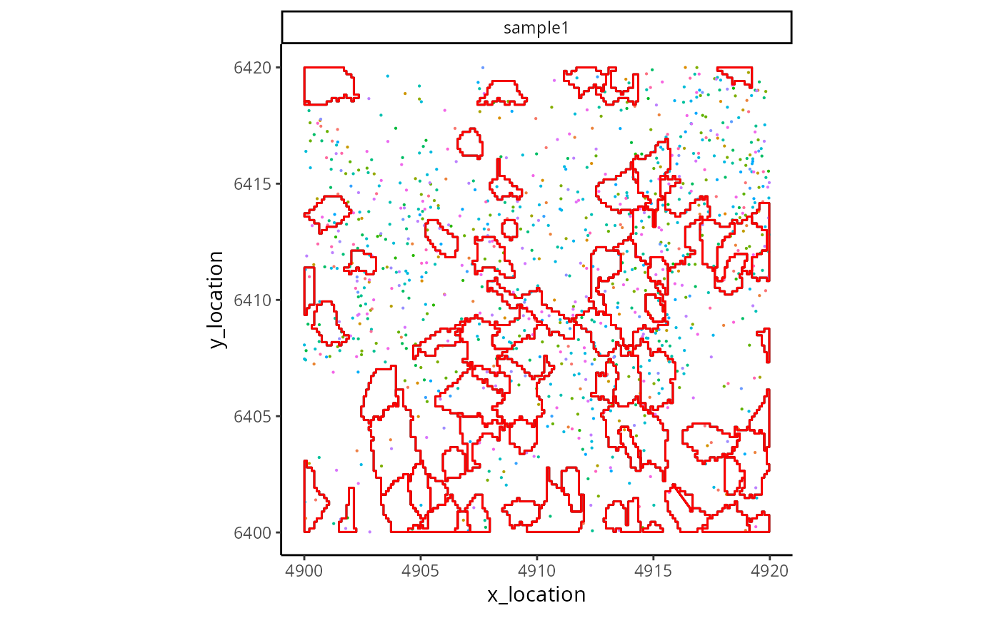

Reads a segmentation mask TIFF and transforms it into a ME boundaries object. One must provide either the path or the loaded image object.
Usage
readSegMask(
extent,
path = NULL,
image = NULL,
assayName = "cell",
background_value = NULL,
sample_id = NULL
)Arguments
- extent
The extent of the loaded segmentation mask in micrometers. Used to align the mask with the transcripts. This must be of the form c(xmin, xmax, ymin, ymax).
- path
The path of the segmenation mask, Default: NULL
- image
The loaded image object, Default: NULL
- assayName
The name of the segmentation (e.g. cell, or nucleus), Default: 'cell'
- background_value
The value corrisponding to the backgorund in the segmentation, Default: NULL
- sample_id
What the sample should be named, Default: NULL
Examples
repoDir <- system.file("extdata", package = "MoleculeExperiment")
segMask <- paste0(repoDir, "/BIDcell_segmask.tif")
data <- paste0(repoDir, "/xenium_V1_FF_Mouse_Brain/sample1")
me <- readXenium(data,
keepCols = "essential",
addBoundaries = NULL
)
boundaries(me, "BIDcell_segmentation") <- readSegMask(
extent(me), # use the molecule extent to define the boundary extent
path = segMask, assayName = "BIDcell_segmentation",
sample_id = "sample1", background_value = 0
)
ggplot_me() +
geom_polygon_me(
me,
assayName = "BIDcell_segmentation", fill = NA, colour = "black"
) +
geom_point_me(me, byColour = "feature_name", size = 0.1) +
geom_polygon_me(
me,
assayName = "BIDcell_segmentation", fill = NA, colour = "red"
)
#> BIDcell_segmentation assay boundaries were retrieved.
#> ℹ Other boundary assays can be retrieved by specifying the `assayName`
#> argument.
#> detected assay transcripts were retrieved.
#> ℹ Other transcript assays can be retrieved by specifying the `assayName`
#> argument.
#> BIDcell_segmentation assay boundaries were retrieved.
#> ℹ Other boundary assays can be retrieved by specifying the `assayName`
#> argument.
